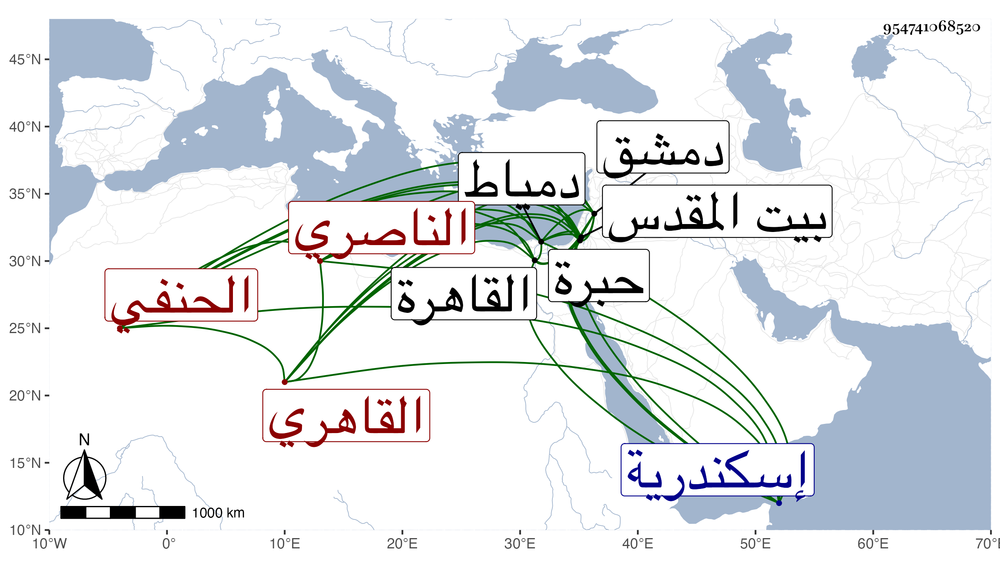

0902Sakhawi.DawLamic.ITO20230111-ara1.EIS1600.954741068520
Biography ID: 954741068520
227
عبد الله بن محمد بن لاجين بن عبد ... الجمال بن ناصر الدين الناصري محمد ابن قلاوون لكون جده من مماليكه القاهري الحنفي ويعرف بابن خاص بك وهو اسم عمه اشتهر بالنسبة إليه لجلالته وكأنه هو الذي كان زوجا لبعض ذرية الظاهر بيبرس . ولد سنة سبعين وسبعمائة أو في التي بعدها بالقاهرة ونشأ بها فحفظ القرآن وبعض الإلمام لابن دقيق العيد وجميع القدوري في الفقه والمنار في أصوله وألفية ابن مالك واشتغل في الفقه على جماعة منهم ابن عمه البدر بن خاص بك والسراج قاري الهداية وعنهما وعن الشهاب العبادي أخذ العربية وسمع الصحيح على ابن أبي المجد وختمه على التنوخي والعراقي والهيثمي وحج رجبيا سنة إحدى وثمانمائة وزار بيت المقدس والخليل ودخل دمشق وكذا إسكندرية ودمياط مرارا وانقطع بأخرة وكف وحدث حينئذ ببعض الصحيح حين قرئ بالظاهرية القديمة محل سكنه سمع منه الفضلاء سمعت عليه وكان إنسانا حسنا نيرا صابرا له رزق واسع يعيش فيه . مات في جمادى الثانية سنة اثنتين وستين رحمه الله .
